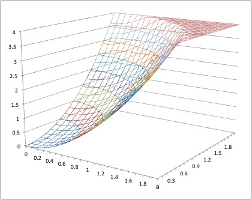
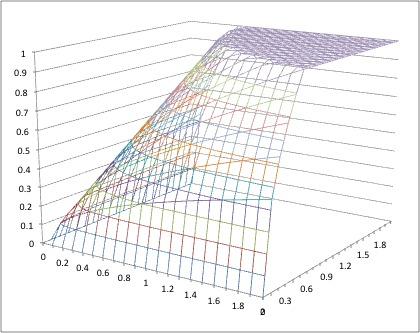
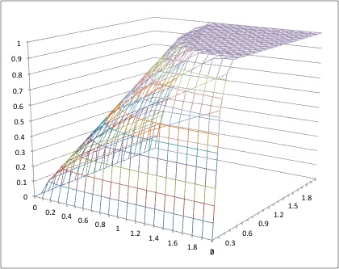
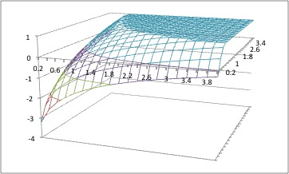
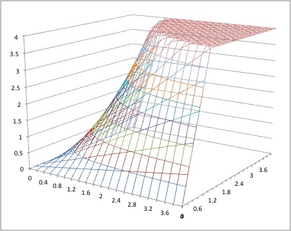

経済学で出る数学
ワークブックでじっくり攻める：問0.14解答例
【解答 0.14】
-
$x^2+y^2=4$ は半径 $2$ の円の一部．

-
$x^{\frac{1}{2}}y^{\frac{1}{2}}=1 \Longleftrightarrow xy=1$ なので双曲線の第一象限側．

-
$x^{\frac{1}{3}}y^{\frac{2}{3}}=1 \Longleftrightarrow xy^2=1$．わかりにくいが，２．との比較を．

-
$\log_{}{x}+\log_{}{y}=1 \Longleftrightarrow \log_{}{xy}=1 \Longleftrightarrow xy=e$ なので双曲線の第一象限側．

-
双曲線の第一象限側．

【解答 0.14 終わり】
解答例一覧へ